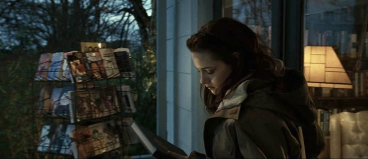

Главная героиня

Белла Свон
Главная героиня, переезжает в Форкс и влюбляется в вампира Эдварда Каллена. Умная, скромная и самокритичная.

Откройте для себя магию и опасность вселенной "Сумерек", где любовь между человеком и вампиром бросает вызов судьбе.
Узнать больше"Сумерки" — серия романов американской писательницы Стефани Майер, повествующая о любви между семнадцатилетней девушкой Изабеллой Свон и вампиром Эдвардом Калленом.
Действие происходит в вымышленном городке Форкс, штат Вашингтон, где постоянно идут дожди и преобладает пасмурная погода. Именно сюда переезжает Белла Свон, чтобы жить с отцом, и встречает таинственную семью Калленов.
Сага состоит из четырёх романов: "Сумерки", "Новолуние", "Затмение" и "Рассвет". Книги стали мировыми бестселлерами и были экранизированы в серии фильмов, которые приобрели огромную популярность.
Перейти к персонажамГлавная героиня, переезжает в Форкс и влюбляется в вампира Эдварда Каллена. Умная, скромная и самокритичная.
Вампир, влюбленный в Беллу. Обладает способностью читать мысли всех, кроме Беллы. Борется со своей природой, чтобы защитить её.
Лучший друг Беллы из племени оборотней. Его чувства к ней создают напряженный любовный треугольник с Эдвардом.
Правящий клан вампиров во главе с Аро, Маркусом и Кайусом. Следят за соблюдением законов вампирского мира.
Группа "вегетарианских" вампиров, которые питаются животными, а не людьми. Возглавляются Карлайлом Калленом.
Охотники-вампиры во главе с Джеймсом. Опасные преследователи, специализирующиеся на выслеживании своей добычи. В группу входят Виктория и Лоуренс.
Белла Свон переезжает в Форкс и встречает загадочного Эдварда Каллена. Между ними вспыхивают чувства, но Эдвард скрывает свою истинную природу вампира.
После инцидента на дне рождения Беллы семья Калленов покидает Форкс. Белла впадает в депрессию и сближается с Джейкобом Блэком, не подозревая о его тайне.
В Сиэтле орудует серия убийств, совершаемых новообращенными вампирами. Белле предстоит сделать выбор между Эдвардом и Джейкобом.
Белла и Эдвард наконец женятся. Белла беременеет, и беременность угрожает её жизни. Эдвард превращает её в вампира, чтобы спасти.
Белла осваивается в своей новой жизни вампира. Вольтури, правящий клан вампиров, считает, что ребёнок Беллы и Эдварда нарушает их законы.